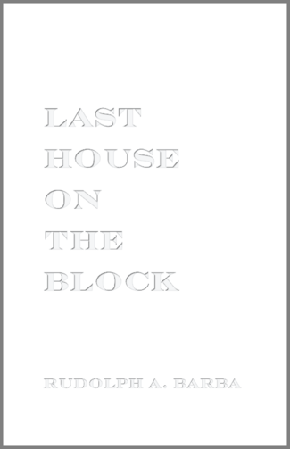
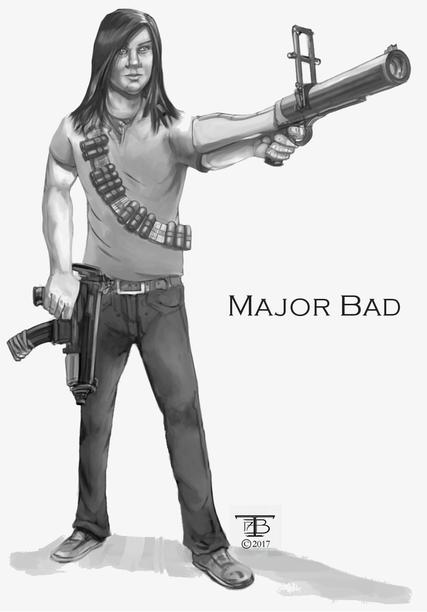
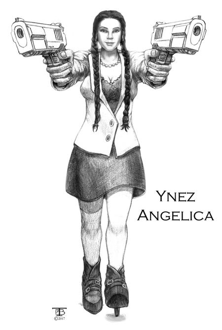

In this work the background details of Panda Head Man, Dr. Winston Isaac, Professor Dos Zetas, Ynez Angelica, Major Bad and the transmundane Lama Rana emerge in a colorfully crafted narrative. Curious circumstances bring them together as a team of vigilantes battling the novel menaces of the 21st century.
Military grade malware is the sleeper WMD. There will be real victims and potentially catastrophic effects in the brick and mortar world. Power grids, nuclear reactors, commercial air traffic and telecommunications are vulnerable. G.O.D., Global Omniscient Database, an ill-willed mega-artificial intelligence, has risen from digital hell. Built by One World Nation to subjugate civilization, only the advanced cyberware and exclusive knowhow of Dr. Winston Isaac’s team can thwart the warlord of zeros and ones.
The future is now and today is tomorrow.
Wicked, shadowy powers will use mainstream’s naiveté, skepticism and apathy as the foundation to build dystopia. The antitheses of those failings are the driving forces behind the topics of Last House On The Block.
LITERATURE/CYBER SCI-FI/SLIPSTREAM

LAST HOUSE ON THE BLOCK
a novel of uncommon fiction
It is uncommon fiction because it is not fiction that our family and friends are ill-fated victims of substance abuse…suffering and dying needlessly, for there is a remedy, and it is found at the Last House On The Block, which is the perfect metaphor for the anonymous and ‘secret society’ we all know.
It is also an up-close look at ordinary people in the workplace setting, a real life soap opera rife with flawed characters, where crises and pathos play-out in all their nuances and consequences. Yet that same workplace steadfastly celebrates triumphs and achievements of commonplace folks that contribute significantly to our national economic health. In this tale, the workplace is a sales office, and it candidly details the dynamics of direct sales and its invaluable function in free enterprise.

While the protagonist delves into recovery and the daily drama of earning his keep marches on, he finds stress release in writing a cyber sci-fi; creating prose has replaced compulsive drinking. His alter ego takes a character; he constructs friends and lovers from words and breathes life into them, and from one credible premise to another, from one outlandish episode to another…he discovers the alternate universe he invents and today’s real world may soon be one and the same. And should they merge just one thing will change…and that is everything. Such the case, the only thing better about tomorrow, is better tomorrow not come.
Fear not the Apocalypse, fear Singularity…fear the day when an immeasurably higher intelligence than Homo sapiens rises from the dark shadows of his own genius and declares itself Silicon Godhead.
You will find no vampires or zombies in the novel, only the monsters in our selves and the ones we create. There is no Happy Ending either, they are for fairytales and massage parlors, moreover, the bigger story is just beginning; may this uncommon fiction serve as a reality check.